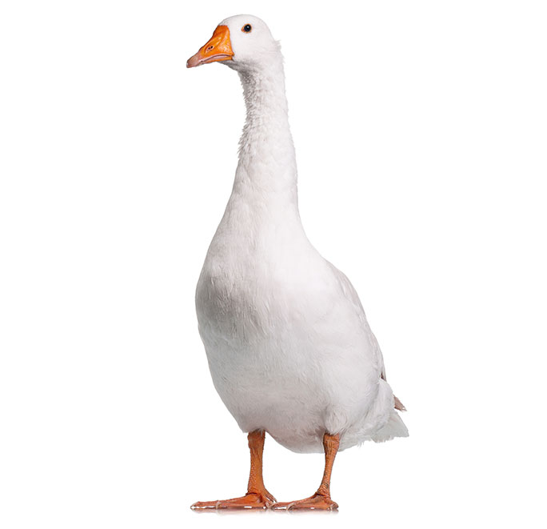
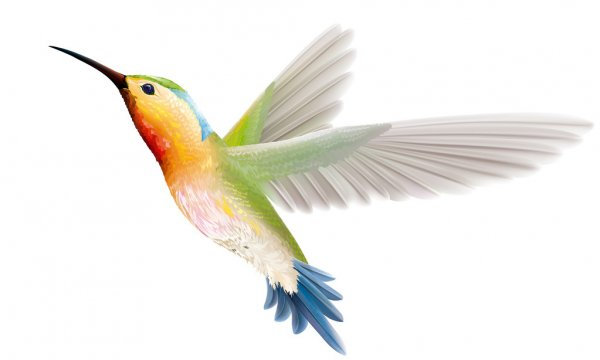

Gęś - ptak wodny, użytkowy, będący udomowioną
formą gęsi gęgawy i gęsi łabędzionosej,
rzadziej gęsi białoczelnej oraz bernikli kanadyjskiej.

Kolibrowate – rodzina ptaków z rzędu krótkonogich,
a według taksonomii Sibleya-Ahlquista tworząca osobny rząd Trochiliformes lub zaliczana
do rzędu jerzykowych. Obejmuje gatunki lądowe,
zamieszkujące Amerykę, głównie w strefie międzyzwrotnikowej.